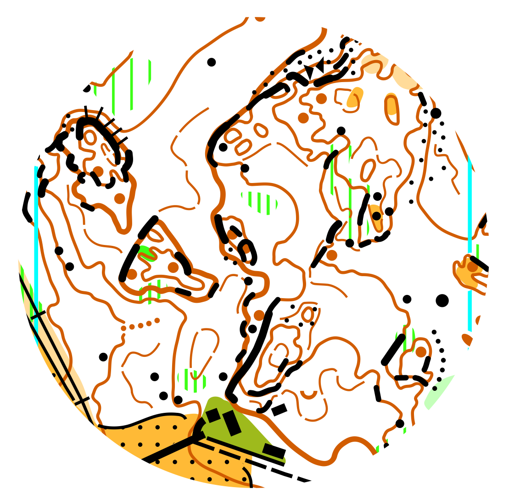
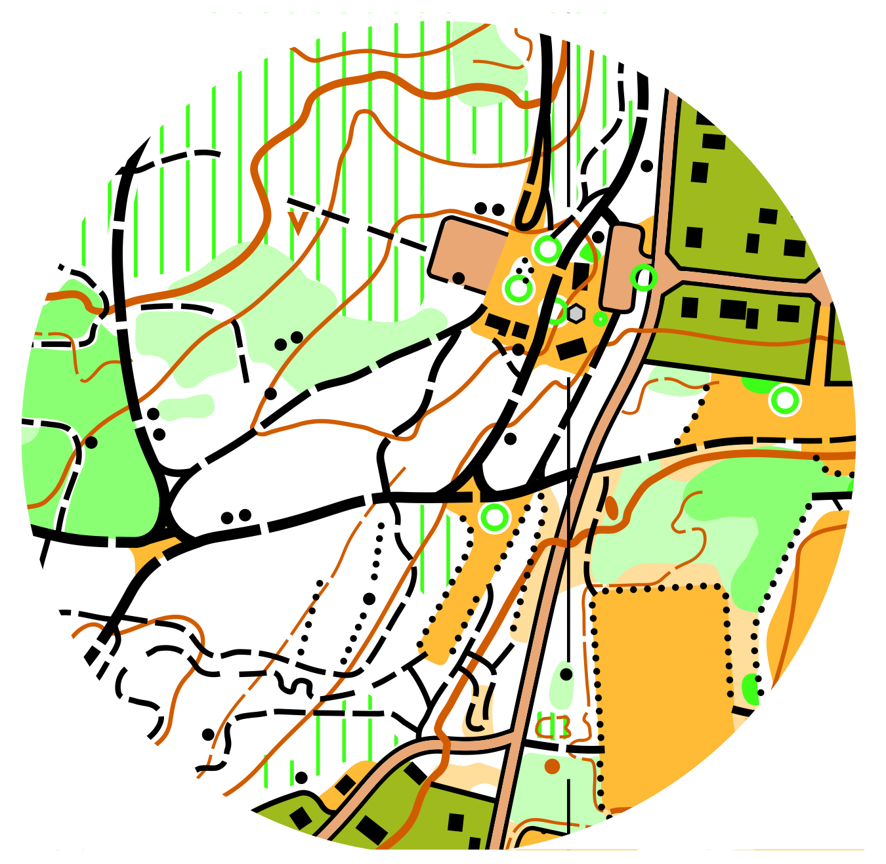
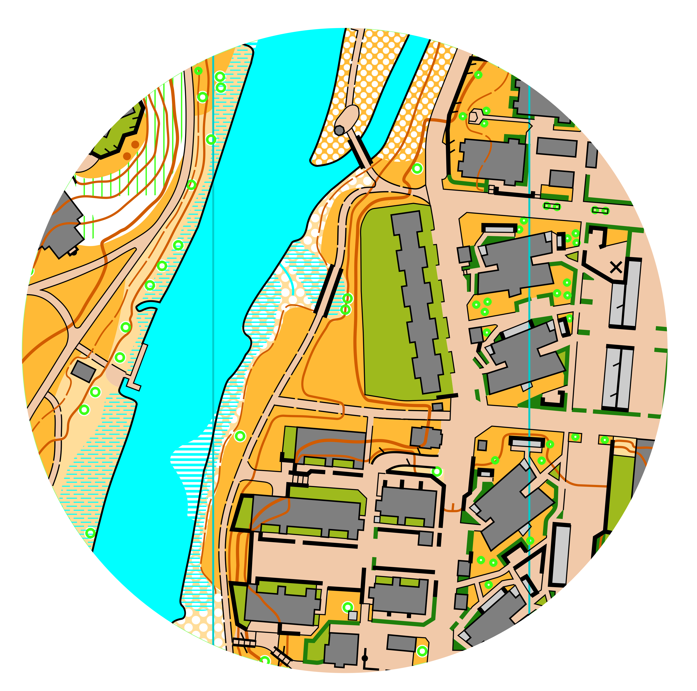
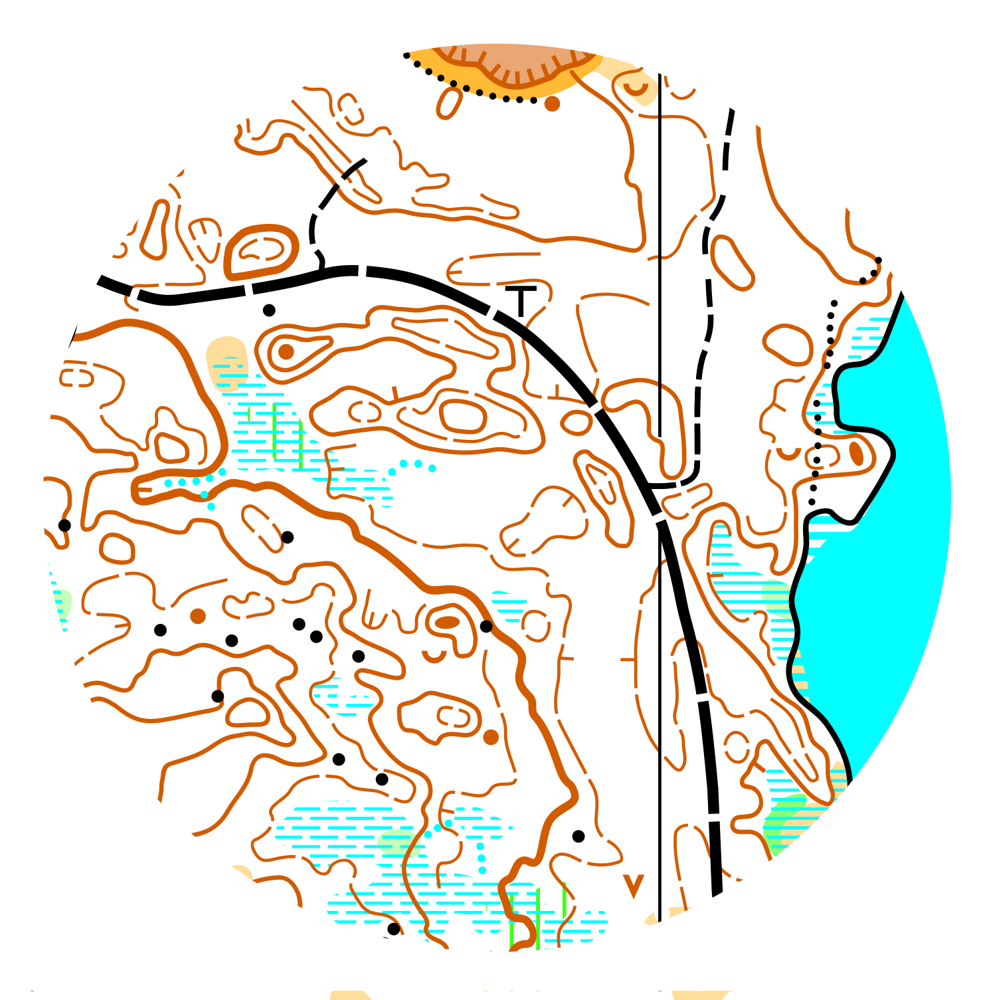

Kartritaren
Välkommen till min hemsida! Jag heter Alfons Enell, och driver en enskild firma för orienteringskartritning.
Jag kommer från Tranås, och bor nu i Linköping.
Jag började rita kartor som hobby under 2020, när jag blev insnöad på hur man egentligen framställer en orienteringskarta.
Det är inte bara att gå igenom en hel skog och rita vad man ser, man måste bland annat även balansera kartans exakthet med dess läsbarhet, så att man
som orienterare får en intuitiv bild av verkligheten med hjälp av kartbilden.
Jag har senare startat en egen firma och ritat flera kartor professionellt.
Till vardags studerar jag även Teknisk Fysik och Elektroteknik på Linköpings universitet, och löper och orienterar därutöver.
Projekt

Västra Harg (13km²) | Mjölby
DM-medel/stafett 2026

Fålehagen/Brinken (3km²) | Motala
2025

Slomarp/Centrum Sprint (3km²) | Mjölby
2025

Skärsjöarna (2.5km²) | Ydre
2023 (rev 2025)
Kontakt
Email: enell.alfons@gmail.com
Telefon: 076-589 05 29
Välkomna att höra av er via email eller telefon/sms för att diskutera kartprojekt.